Didn't you enjoy the night view of the sky during your trip to Peeli's
village? Listen to Appu's description after the trip.
10
10
How beautiful the sky is under
the moon’s radiant glow!
Thousands of stars glitter
like pearls in the night. Peeli,
gazing at a luminous celestial
sphere said, “It is a planet.”
As we watched in amazement,
Vicky
shouted,
“That
is
Venus.” Then Neenu asked,
“Do you know why Venus
shines so brightly eventhough
it’s a planet?'' Everyone looked
at Neenu out of curiosity.
And then, the mystery of the
miraculous sights in the sky
began to unfold.
Wonders in the Sky and
Splendours on the Earth
Wonders in the Sky and
Splendours on the Earth
Page 57

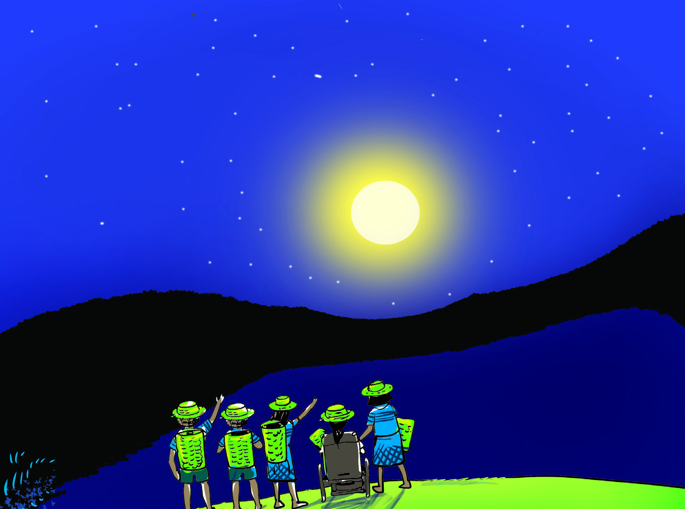
Page 58
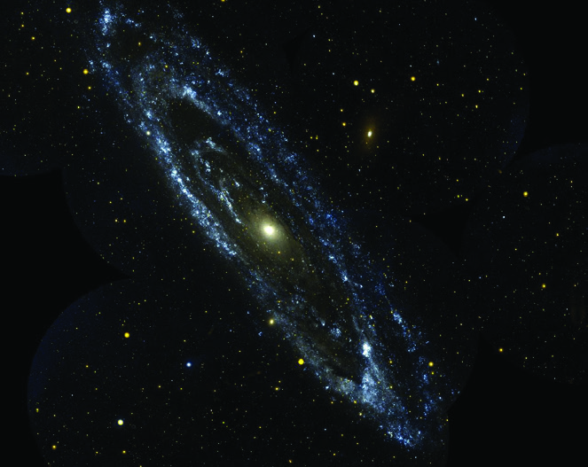

162
Social Science Class V
Doesn't everyone love the view of the sky at night?
Why is the beautiful view of the sky at night not visible to us during
daytime? Write down the reasons.
•
•
•
Haven’t you understood that the presence of the Sun is the reason for
this? The Sun is a star. The Sun is also the closest star to the Earth. There
are many other stars which are bigger than the Sun.
Don't the stars look so small from the Earth? Why?
Some celestial bodies revolve around the Sun. Observe the picture of the
Sun and these celestial bodies.
Draw a picture showing the beauty of nature at the time of sunrise or
sunset.
Galaxies
Stars appear small because they are far
away from the Earth. Stars are giant
celestial bodies that are luminiscent.
They emit large amounts of heat and
light. Galaxies are clusters of billions of
stars.
Why do stars twinkle?
Light emitted from the stars in a straight
line is constantly deflected, as it passes
through the atmosphere. Therefore, the stars seem
to twinkle when we look at them from the Earth.
Page 59
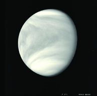
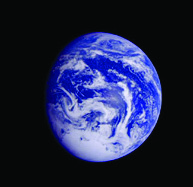
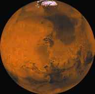
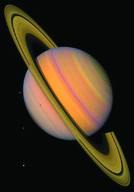
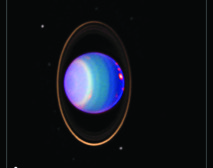
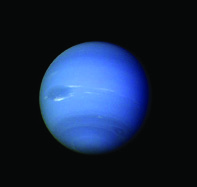
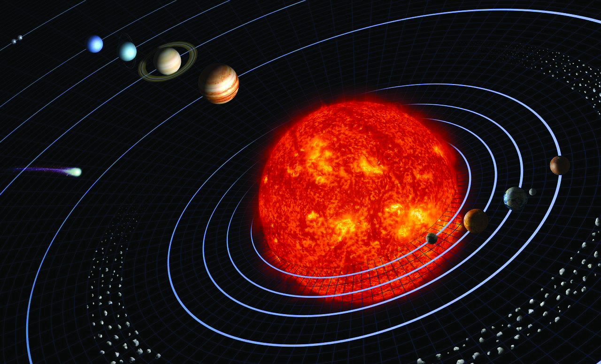
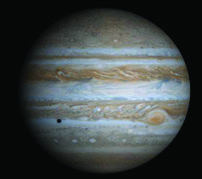
163
Wonders in the Sky and Splendours on the Earth
Apart from the Sun, which are the other celestial bodies there in the
picture?
In which celestial body among these do we inhabit?
The Earth is a planet. What are planets?
Planets are celestial bodies that rotate themselves and revolve around
the Sun. They cannot emit heat or light by themselves. Planets get their
heat and light from the Sun. Check out the list to find out which planets
revolve around the Sun and what are the characteristics of each of them.
Planets
Features
Planets
Features
Mercury
closest to the Sun
Jupiter
the largest planet
Venus
known as Morning Star
and Evening Star
Saturn
the second-largest planet
Earth
the only planet in which
life exists
Uranus
the coldest planet.
Mars
red planet
Neptune
the planet that is farther
from the sun
Image - 1
Sun
Sun
Mercury
Mercury
Jupiter
Saturn
Saturn
Uranus
Neptune
Neptune
comets
comets
dwarf planets
asteroids
Venus
Venus
Earth
Earth
Moon
Mars
Mars
Page 60

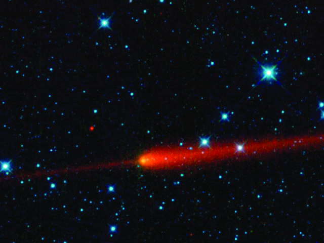
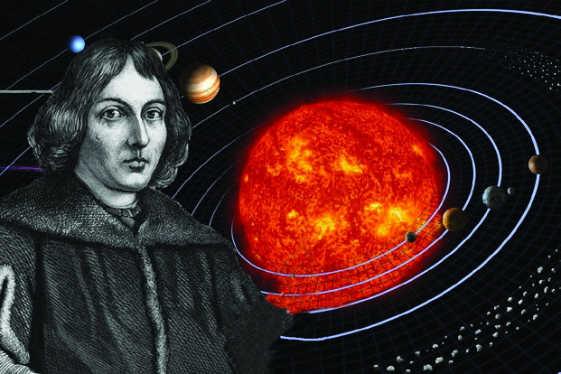
164
Social Science Class V
Have you noticed the picture of the Sun and the celestial bodies revolving
around it?
Are only the planets revolving around the Sun? Apart from the planets,
dwarf planets, and asteroids are seen in image - 1 (on page 163), aren’t
they?
The Solar System consists of the Sun, the eight planets orbiting the Sun,
their satellites, dwarf planets, asteroids, meteors, and comets. The Sun is
the centre of the solar system.
Comets
Comets are rare visitors to the solar
system. They are made of rock, dust, and
ice. Their tails glow in sunlight as they
approach the Sun.
The Milky Way is a galaxy that includes the solar system. It has billions
of stars. The universe consists of billions of such galaxies.
Dwarf planets
Dwarf planets are smaller and spherical objects in
the solar system that orbit around the Sun.
Asteroids
Asteroids are small planet-like chunks of rock
found between Mars and Jupiter.
It was Nicolaus Copernicus who
revealed to the world that the Sun
is the centre of the solar system.
He was a Polish astronomer.
Page 61

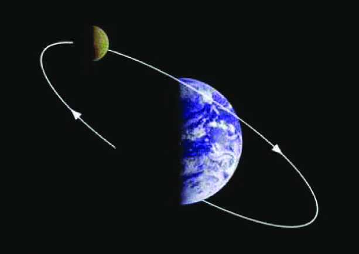
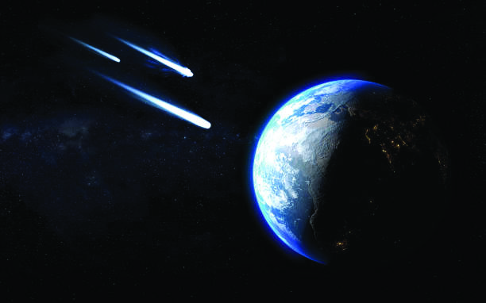
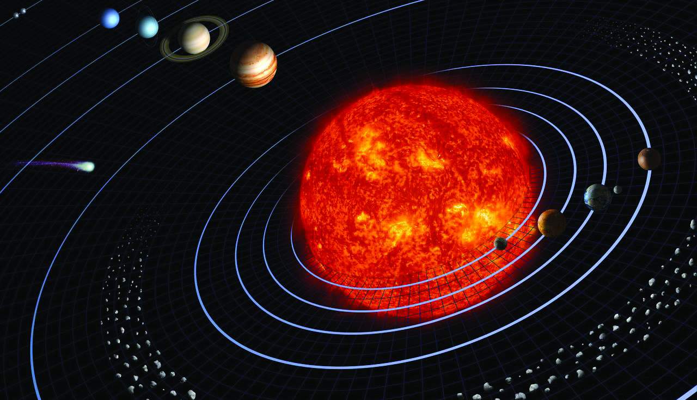

165
Wonders in the Sky and Splendours on the Earth
Satellites are celestial bodies that orbit around the planets in fixed orbits.
The Moon is the only satellite of the Earth.
Sidereal month
The Moon takes about 27.3 days
to orbit the Earth once. This is
called a sidereal month.
Earth
Moon
Observe the orbits of the planets of the solar system. The orbit is the path
of celestial bodies around the Sun. Planets revolve around the Sun on
elliptical orbits. It is the gravitational force between the planets and the
Sun that helps the planets move along their fixed orbits. All the planets
rotate on their imaginary axis while orbiting the Sun.
Meteors
Meteors are pieces of rock that enter the
Earth's atmosphere at a high speed from
asteroids and the like. At night they are
seen as fast-moving sparks in the sky.
They burnout in a few seconds. They
are locally called Kollimeen.
Roleplay the solar system with the help of your friends. Don't forget
to introduce each planet with its characteristics.
Page 62


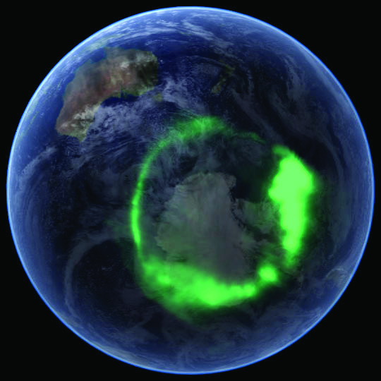
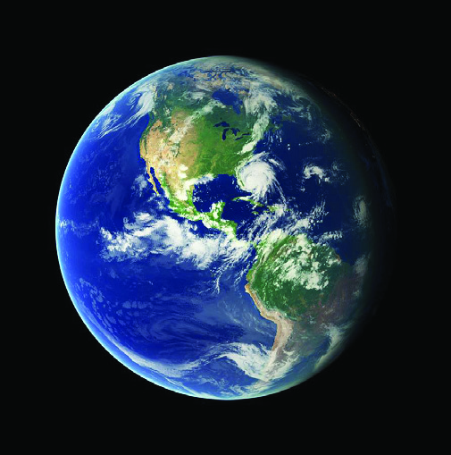
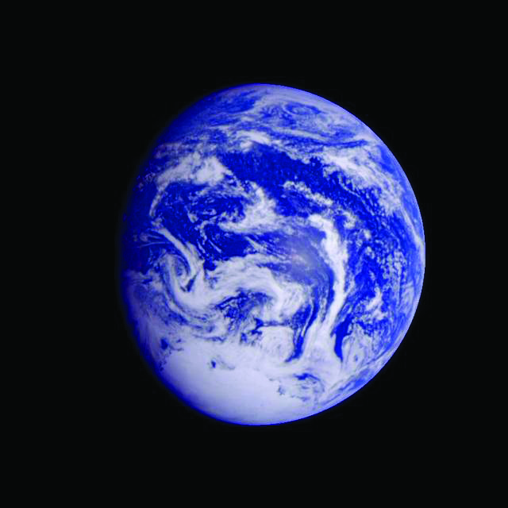

166
Social Science Class V
Our Earth
Read what astronaut Sunita Williams had to say about the Earth.
The Earth is the only planet in
the solar system where life exists.
The Earth has a unique spherical
shape. It is spherical with the
poles slightly flattened and the
equator slightly bulged. This
shape is known as Geoid. The
term 'geoid' means the shape of
the Earth.
The Indian scientist Aryabhata believed that the Earth was spherical
and rotated on its imaginary axis. Greek philosophers such as
Thales, Pythagoras, and Aristotle also believed that the Earth was
spherical. Later, the navigator Magellan's circumnavigation of
the world proved that the Earth is round.
Space
Space is the area beyond
the limits of the atmosphere
outside a celestial body. Experts
are sent to the space from different
countries
for
expedition
and
experimentation.
Images of the Earth taken from space
“The earth looked very beautiful and
wonderful. We could watch it for hours through
the window of the space station. We could see
the spherical shape of the Earth."
Sunita Williams
Page 63

167
Wonders in the Sky and Splendours on the Earth
Discuss and make notes on the role of the atmosphere in sustaining
life on the Earth.
“Dad, I have just had
dinner.
I'm just getting ready
for bed.”
Observe the images of the Earth captured from space. Isn't the Earth seen
as a blue sphere in this picture? Why is it so? Which is the most common
colour on the globe, the model of the Earth? The Earth looks like a blue
sphere from space because about 71% of the Earth's surface is water.
Another feature that distinguishes the Earth from other planets is its
atmosphere. The atmosphere is the blanket of air covering the Earth. It
contains gases, dust particles and water. The atmosphere plays a crucial
role in sustaining life on the earth by regulating heat and cold.
Why does the atmosphere exist as a covering around the Earth? Examine.
Motion of the Earth
Listen to this conversation. We see Jinu, who is working in Canada,
engaged in a video call with his parents in India. Jinu and his parents
live in two different places on the Earth.
Observe the globe and find the location of Canada and India.
Why would it be daytime in one place and night in the other?
“Son, hope you are fine.
We are going to have
our breakfast here.”
Page 64
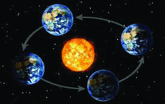
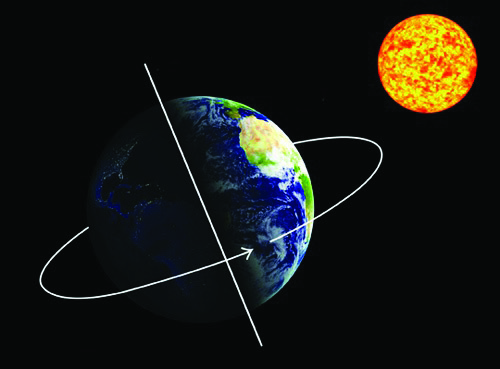

168
Social Science Class V
പകൽ
As the Earth is spherical, only one-half of the Earth receives sunlight at
a time. It will be dark on the other half.
The part of the Earth that faces the Sun receives sunlight and so it
experiences daytime there. It will be night on the otherside because
no sunlight reaches there. Thus, night and day alternate on the Earth
because of the rotation of the Earth. Rotation is the spinning of the Earth
on its imaginary axis.
Illustrate the revolution of the Earth on a chart and display it in
the class.
The Earth rotates from the west to the east. That is why we feel that
the Sun rises in the east and sets in the west.
The Earth takes 23 hours 56 minutes 4 seconds to complete
one rotation. This is calculated as a day.
As it rotates, the Earth moves
around the Sun on a fixed orbit.
This
is
revolution.
It
takes
365¼ days for the Earth to
go around the Sun once. It is
considered as one year. Seasons
are experienced as a result of the
revolution of the Earth.
Earth's Revolution
Day
Night
Axis
Earth's Rotation
Page 65


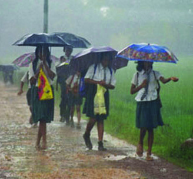

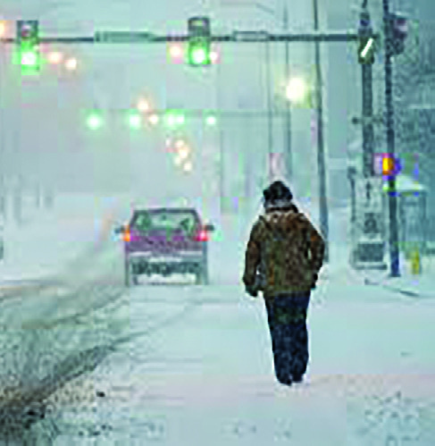
169
Wonders in the Sky and Splendours on the Earth
The Seasons
How joyful were the days of my
childhood...! The Idavappathi
rain that drenches our new
clothes at the beginning itself of
the school year. This rain that lasts nearly
for two months and begins to withdraw
as the month of Karkidakam ends. Then
arrives Chingam, the month of wealth and
prosperity. How beautiful is nature as it
blooms to welcome Onam! Then comes
the Thulavarsham, bringing relief to the
summer heat of Kanni. The month of
Vrishchikam and Dhanu cool nature. In the month of Makaram, some trees
are seen shedding their leaves. Most waterbodies dry up due to the intense
heat of Kumbham, Meenam and Medam. The mangoes and the jackfruits
in the yard make nature beautiful even at that time.
You have read Grandma's experience. Here, Grandma refers to the
changes in nature from her childhood. What changes are they?
• rain
•
•
•
Do we get all types of fruits every season? Discuss.
Which seasons do the given pictures refer to?
• rainy season
•
•
Page 66
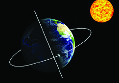
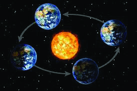

170
Social Science Class V
The Weather and the Climate
What are the sights around you during different seasons?
Discuss in class and complete the list given below.
Summer season
Rainy season
Winter season
•
waterbodies
dry up
•
rivers overflow
•
snowfall in areas
with a high
altitude
•
•
•
•
•
•
Complete the table below based on the two main motions of the
Earth- rotation and revolution.
Rotation
Revolution
•
earth spins on its axis
•
..........................................................................
•
..............................................
•
seasons occur
Though different seasons are experienced in this way in Kerala, they
are experienced differently in other regions of the Earth. These seasonal
changes are caused by the revolution of the Earth and the fluctuations of
the solar energy received on the Earth. With the seasonal changes, there
are changes in the atmosphere and nature.
Under 17 Cricket: Final match cancelled due to rain
Kochi: The Under-17
cricket final match
scheduled yesterday
was cancelled due to
unexpected torrential
rains. Weather forecast
says that it is likely to
have strong wind and
rain for the next three
days.
Do you experience all of these seasons in your area?
Page 67


171
Wonders in the Sky and Splendours on the Earth
Haven't you read this news? What was the situation that led to the
cancellation of the cricket match? Sometimes these changes in the
atmospheric conditions occur due to changes in weather.
Weather
Weather is the atmospheric condition experienced at a certain time in an
area. Humidity, heat, rain, wind, clouds, etc. in the atmosphere at a certain
time influence the weather conditions.
Climate
Climate is the average daily weather conditions experienced in an area over
a long period.
How helpful are the accurate and scientific daily weather warnings in daily
life? Discuss.
Heat Rises: Alert in the State
Snow Falls again in
Himachal: Holidays for
Schools
Heavy Rain: Orange
Alert in 5 Districts
Strong Winds Likely: Fishermen
Warned against Venturing into Sea
Climate and the Life of People
Buses, lorries, and cars start running on the
heart of the frozen lakes. Every corner bustles
with winter sports such as skiing and skating.
The roads are covered with snow most of the year,
making it very difficult and expensive to keep them
safe and beautiful...Kaya said, "if you want to see the
true beauty of Lahti, you should visit during winter."
The ground will be covered with white snow and all the
trees will stay like tassels made of white paper... How
eager the children are to play in the snow! Night time
lasts for six months then, with daylight for an hour or two to the maximum.
The snow-white landscape and the light of the sky together create the effect of
moonlight.
S.K. Pottekkatt
Page 68


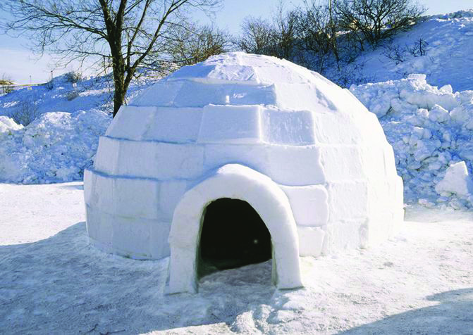
172
Social Science Class V
Haven't you read the note? You have read the part that mentions the
life of the people in the snowy areas by famous travelogue writer S.
K. Pottekkatt in the book 'Pathirasuryante Nattil.' What are the special
characteristics of this area?
•
•
•
•
Locate Norway on the atlas.
The Land of the Midnight Sun
Norway is a country known as the land of the midnight Sun. Norway
is located in the northern part of Europe. The northernmost regions of
Norway which are covered with snow for most of the year, experience
six months of continuous day and six months of continuous night.
Let's see how life is organised in this
sparsely populated snowy region.
The people here wear air-tight
footwear made of leather and clothes
made of fur. It is a common sight to
watch the local people called ‘Inuit,’
travelling on flat sledges pulled
by domesticated dogs. During the
winter season which lasts for six
months, they do not leave their
dwellings which is called an 'Igloo.' The chief plant species here are ferns
and moss, which survive extreme winter. The chief species of animals
are whales, fish, snow owls, seals and polar bears. Hunting and fishing
are the means of livelihood of the people.
Sledge
Igloo
The Inuit or Eskimos are an indigenous people
living in the polar regions. Igloos are houses
built by them with blocks of ice.
Igloo
Page 69

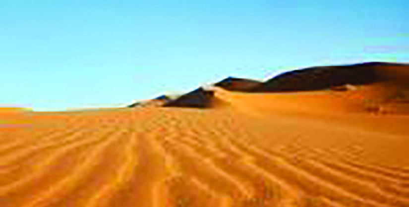
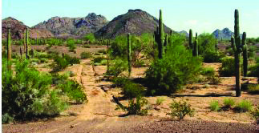
173
Wonders in the Sky and Splendours on the Earth
Tropical deserts are landmasses with very different geological features
from the polar regions. Large area of sand and sand dunes are the specialty
of this region. Here, the temperature is very high during the day and at
night the temperature is very low. These areas, with very little rainfall,
experience high temperatures, dry winds, and water scarcity. These areas
are less populated. Climate-adapted lifestyles exist in tropical deserts.
Continuous drought and sandstorms are other characteristics of deserts.
Loose clothing and headress that covers the face are characteristics of
desert dwellers. Using camels for carrying goods and transportation is a
common sight in deserts.
Complete the chart by writing down the other features of desert
regions.
Less
temperature
at night
The desert
..............................
..............................
..............................
Wide sandy
areas
Temperature
is very
high during
daytime
Prepare, with the help of your teacher, a digital album on the features
of snow-covered areas and present it to the class.
Desert
Look at the pictures
Page 70


174
Social Science Class V
I come from Kenya where 20 crore
people are suffering from the adverse
effects of climate change. There is
severe drought and we have not had rain
for two years. Scientists predict that it will
be the same in the third year also. We don’t
get sufficient rain. Without rain, all the
rivers have dried up and heat waves are sweeping through the land. Please open
your hearts. All our crops have dried up. Animals and humans are dying. If this
continues, half of us will have been wiped out by 2025. The decisions in this
conclave will be decisive in bringing back rains. Decide whether our friends,
the children, will get food and water. Please open your hearts. Please open your
hearts...
The regions with such characteristics have a different way of life adapted
to the climate. We have discussed how the physical diversity of polar
regions and desert regions affects the lives of the people there. Agriculture,
occupation, food, clothing, house construction, celebrations, etc. of a
region are all shaped according to the climate of that place. However,
studies show that unscientific human interventions cause changes in
the natural environment. As a result, there are significant changes in the
climate around the world today.
You have read a plea to world leaders by Elizabeth Wathuti, a schoolgirl
from Kenya, at the United Nations Climate Conference in Glasgow on
31 October 2021. Climate change is one of the most complex issues that
is faced by the world today and the generations to come. An important
factor influencing the climate of a region is the atmospheric conditions
of that region. Fluctuations in atmospheric temperature lead to climate
change. Climate change is a slow process on the Earth. Even slight
changes in climate have a significant impact on nature. How can we
detect climate change?
Given below are some pictures from the exhibition conducted at Anu's
school in connection with the World Environment Day.
Climate Change
Page 71

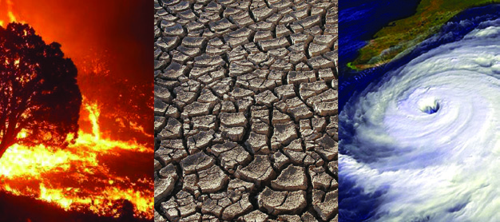
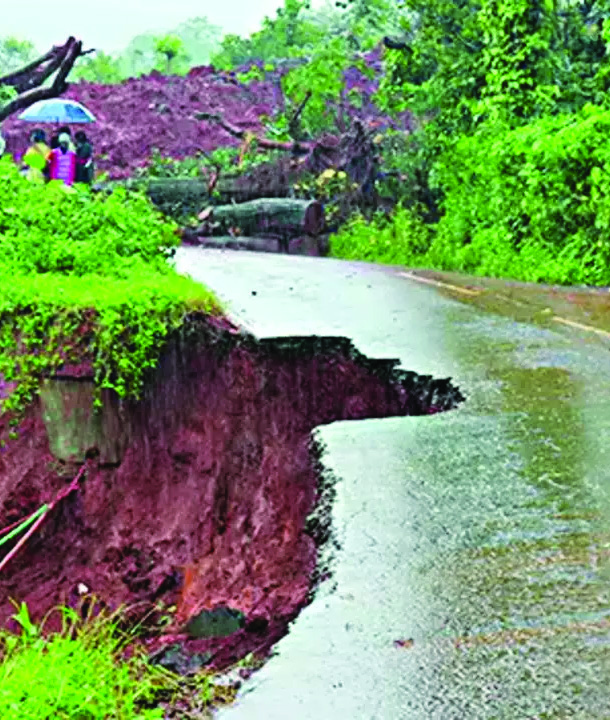
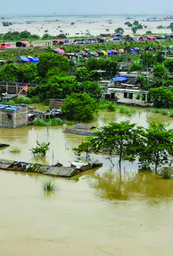

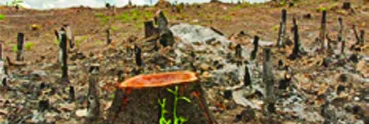

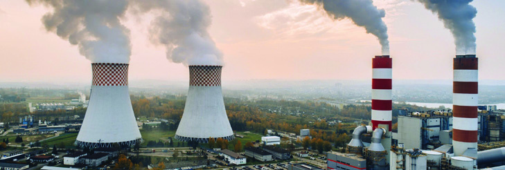
175
Wonders in the Sky and Splendours on the Earth
Observe the pictures. Natural calamities occurring on the Earth due to
climate change are given in the pictures. What are they?
•
•
•
•
Let's check the side effects of climate change.
Climate
change: side
effects
•
rising global temperatures
•
the rise of sea level and tsunami
disaster
•
rainfall that is not seasonal, and
fluctuating rainfall
•
drought
•
melting of polar ice
Uncontrolled use of natural resources and unscientific construction
activities affect the very existence of the Earth adversely.
Observe the pictures.
Page 72


176
Social Science Class V
Many unscientific human activities cause climate change. Identify them
from the picture and note down.
•
toxic gases emitted from vehicles
•
deforestation
•
•
Climate change affects all living things on the Earth in many ways. It also
causes the extinction of many species. Even natural disasters are often
caused by climate change.
Prepare a wall magazine, with the help of your teacher, on the
species that face the threat of extinction.
The beautiful earth that we live in and its resources belong to future
generations too. So, we are bound to use the natural resources available
to us today with care. By living in harmony with nature, we can fight
together against the great menace of climate change. It is the duty of each
one of us to ensure the conservation of nature to mitigate climate change.
Actions for environmental protection can start from our surroundings.
Prepare posters to create awareness of climate
change among people and display them in the
class.
The Government of Kerala has been devising and implementing various
schemes to control the human activities that cause climate change and
also to protect the environment. Haritha Keralam Mission is an example
to this.
A scheme implemented by the government laying emphasis
on the areas of soil and water conservation, sanitation, waste
management and organic agriculture. Haritha Karma Sena,
Pachathuruth, etc. are the notable action programmes of
Haritha Keralam Mission.
Haritha Keralam Mission
Haritha Keralam
Haritha Keralam
Mission
Mission
No,
No,
Don't litter
Don't litter
Don't burn
Don't burn
Page 73

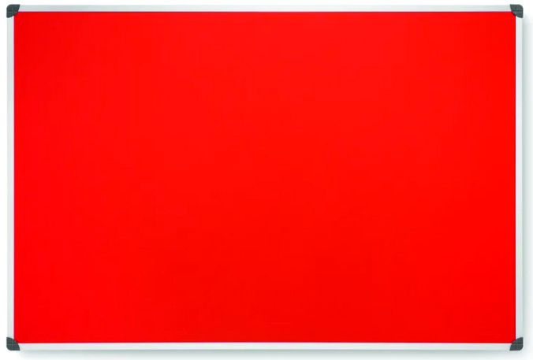

177
Wonders in the Sky and Splendours on the Earth
What environmental actions can you take to mitigate climate
change? Post your suggestions on the bulletin board in your class.
reduce air pollution
prevent deforestation
reduce the use of plastic
increase the use of organic fertilisers
Extended Activities
1. Let's observe the calendar.
Observe the calendar of the current year and find the time of
sunrise and sunset on the dates given below and complete the
table.
Is the time of sunrise and sunset on the table the same? What
difference did you find in the length of night and day? Record the
information you find in your observation diary.
19
20
21
22
23
Sunrise
June
December
Sunset
June
December
Date
Month
Page 74
178
Social Science Class V
2. Collect news and pictures about the Sun, planets and other
celestial bodies and prepare an album.
3. Let’s prepare an observation calendar
Observe the seasonal changes in nature in your area and record
them regularly in a notebook. Make the observation calendar
attractive by including pictures.
4. Prepare a digital presentation titled 'Climate and the Life of the
People in Desert and Polar Regions’ based on the given points.
Indications
• food
• style of dressing
• occupation
• housing construction
• flora and fauna
5. Prepare a magazine by collecting more information and including
pictures about the solar system. Provide a suitable title to the
magazine.